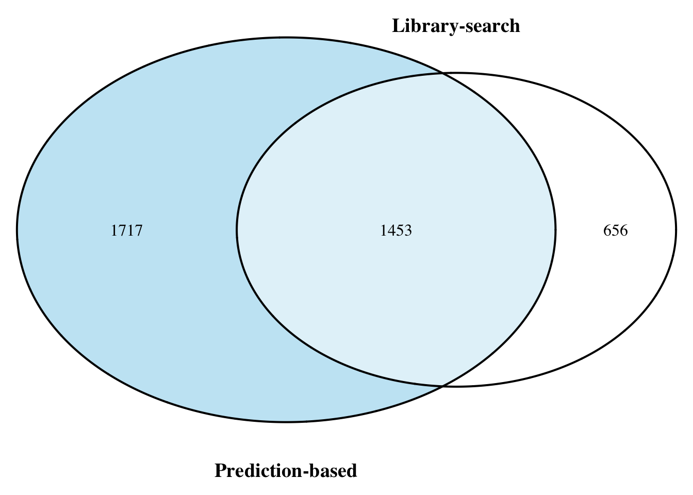

Figure1
Figure 1: Overview of Soil Lipid Categories & Classes in the ClimgGrass Experiment
This Scirpt provide the scipt for plotting the Stacker bar plot of distribtuion and count of lipid compounds.
Load necessary libraries
Warning: package 'ggplot2' was built under R version 4.3.3
Attaching package: 'dplyr'The following objects are masked from 'package:stats':
filter, lagThe following objects are masked from 'package:base':
intersect, setdiff, setequal, unionLoad the data
Prepare the data for plotting Stacked bar plot
`summarise()` has grouped output by 'Class'. You can override using the
`.groups` argument.Create the plot

Lipid Annotation Comparision Library-Search v/s Prediction-based approach
Attaching package: 'reshape2'The following object is masked from 'package:tidyr':
smiths
Warning: package 'VennDiagram' was built under R version 4.3.3Loading required package: gridLoading required package: futile.logger
png
2